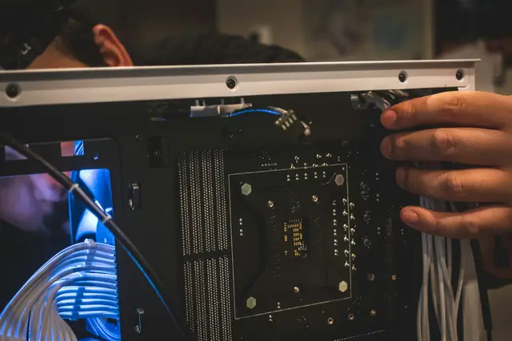
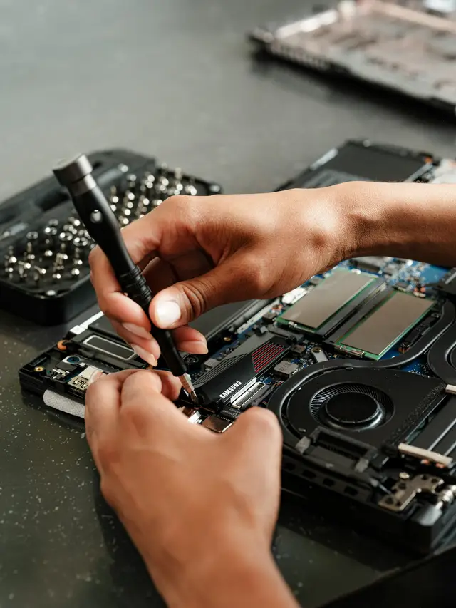

Manutenção de computadores e notebooks
Manutenção preventiva e corretiva, formatação, limpeza, troca de peças e otimização do sistema.

O que está incluso.
Tudo o que fazemos nos computadores e notebooks.
Manutenção preventiva e corretiva
Revisamos antes de dar problema e corrigimos quando algo falha.
Limpeza interna
Limpeza de ventoinhas, coolers e componentes. Menos calor, menos barulho.
Formatação
Sistema limpo, instalado e pronto para usar.
Otimização do sistema
Ajustes para o computador voltar a responder sem travar.
Troca de peças
Diagnóstico, instalação e teste. O custo da peça fica por conta da empresa.
Configuração
Programas, contas e periféricos instalados do jeito que você usa.

Antes de trocar qualquer peça.
- Diagnóstico primeiro
- Avaliamos o equipamento para achar a causa real do problema.
- Você aprova a peça
- Diagnóstico, instalação e teste, com a sua aprovação antes.
- Orçamento sem compromisso
- Você sabe o valor antes de decidir.
- Acompanhamento
- Suporte depois do serviço, para você e para a sua empresa.
Dúvidas sobre computadores.
O que a AtomTuring faz?
Manutenção preventiva e corretiva, formatação, limpeza, troca de peças e otimização do sistema de computadores. Instalação e configuração de rede cabeada, otimização de sinal Wi-Fi e suporte técnico. E acompanhamento contínuo.
Quem paga as peças?
Nós fazemos a troca. O custo da peça fica por conta da empresa.
Quanto custa e quanto tempo leva?
Depende do serviço. Valores e prazos são combinados no orçamento, que é sem compromisso.
Como peço um orçamento?
Pelo WhatsApp (11) 94549-8733, pelo Direct do Instagram @Atomturing, por e-mail ou pelo formulário da página de orçamento.

Computador com problema? Vamos ver isso.
Orçamento sem compromisso. Confirmamos o horário pelo WhatsApp.